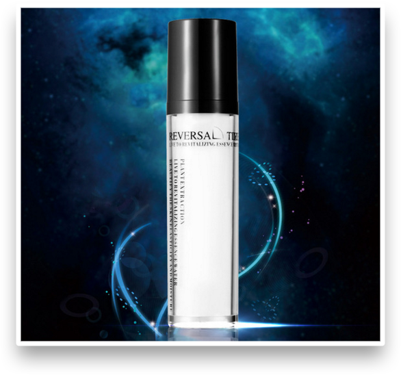

保湿美白BB霜
改革开放30年来我国化妆品市场销售额平均以每年23.8%的速度增长，最高的年份达41%，增长速度远远高于国民经济的平均增长速度，具有相当大的发展潜力。化妆品的流通渠道也在发生非常大的变化，特别是零售终端发生着前所未有的深刻变革。“十二五”规划把消费提到了前所未有的高度，消费有望成为推动经济增长的最大驱动力。化妆品零售业的发展与创新大有可为。化妆品渠道是多样性的，各种零售终端，以及整个流通渠道，呈现出各种各样的特点，都有自己相对应的市场、一部分目标客户群体。渠道不同，也让化妆品出现了专业线和日化线之分。而日化线渠道则是那些像传统的销售渠道、百货商店、化妆品的专业市场都在持续发展。超市的渠道这些年来随着连锁经营超市的发展，商超化妆品终端也在呈现快速发展的趋势，形成了化妆品零售的主要渠道之一。经典国货品牌借助其在商超渠道的发力，才再次迎来其第二春。专营连锁店的崛起，在三四线城市表现得更加突出，市场占有率不断提高，有些城市甚至成为化妆品销售的主流终端渠道。除此以外还有以生产厂商为主导的连锁企业的发展，对扩大消费、促进化妆品流通体系的创新变革发挥着重要的作用。运用新的信息技术和互联网，以网购和电子商务为代表的网络销售风起云涌，网购化妆品的数量也在呈快速发展的趋势，改变和更新着人们的消费理念和消费模式。70后、80后尤其是90后成为消费的主力军以后，网购的速度还会加快，详见《前瞻互联网对中国化妆品行业的机遇挑战与应对策略专项咨询报告》。随着社会发展的加快，人们对于化妆品的消费从商超走向网购，让护肤、彩妆成为生活中必不可少的课题。妆容的精致直观展现了一个人的精神素养，更是个人魅力的体现。引领美作为国内专业级化妆工具领导者，打造了新一代中国女性唯一的独特魅力。